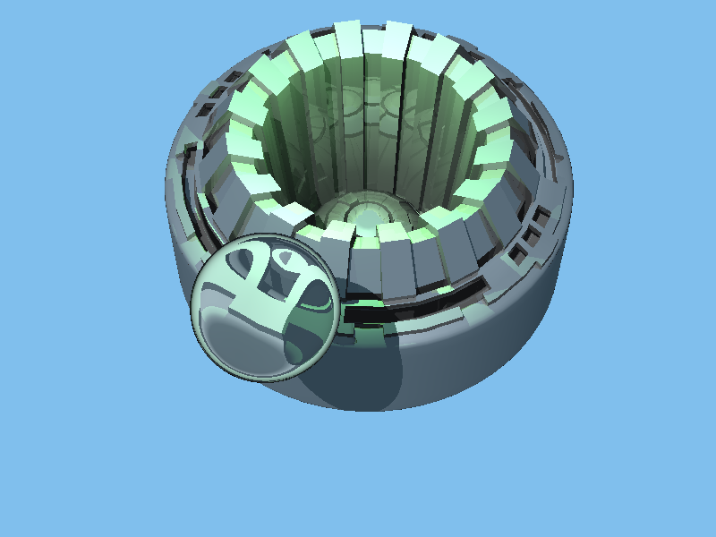
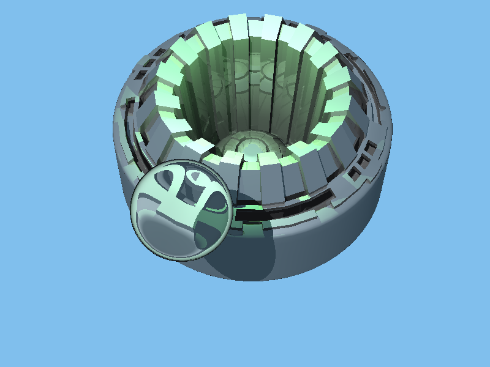

..
Homework 3 - Fully-Featured Raytracer
Jackson Kruger
The source code for my Raytracer can be found on Github.
I developed this Raytracer in Visual Studio in Windows. A compiled executable can be downloaded here.
Features (which should be apparent from the outputs below)
- Arbitrary camera placement, film resolution, aspect ratio
- User specified background color
- BMP output
- Spheres, Triangles (both with auto normals and user-specified surface normals), Planes, Rectangles, Rectangular Prisms
- Ambient lights, point lights, spot lights, directional lights, multiple lights
- Basic sampling, grid-based supersampling, jittered supersampling
- Diffuse, specular, ambient, (bounded) recursive reflective and refractive lighting, hard shadows
- Depth of field
- Motion warp - makes images look like they're going really fast but doesn't blur them (more of a rolling shutter kind of thing)
Attempted but not working or barely working:
- BVH as an acceleration structure - more on this below
- Motion blur - more below
Architecture Overview
The file containing main, Raytracer.cpp, only exists to kick things off. It tells Parser what file to parse, who then initializes the relevant
objects and sets appropriate values. The most important objects it initializes are the Renderer, the Scene, and the Camera.
The Scene contains all of the lights and shapes, while the camera primarily exists to construct the rays.
The Renderer is the bridge between the Camera and the Scene, as well as the final Image
object that is used to output at the end. It iterates over width and height, telling the camera to construct the rays, getting the colors
of the pixels from the Scene, then setting the pixels of the Image. The Scene has a collection of Intersectables which it
it tells to intersect with the current Ray, potentiall modifying the out-parameter Intersection. I employed object-oriented patterns pretty heavily,
and leveraged C++'s polymorphism heavily as well. For example, a Primitive is something that is both Intersectable and Materialed.
An IntersectableGroup is a collection of other Intersectables, and is thus itself Intersectable, but does not have a Material.
Notes
- I spent a while trying to figure out why my point lights weren't getting as bright as the sample images when very close to objects.
It was simply because early on I'd decided to clamp my PointLight's illuminance when returned.
- I really tried to get a BVH working. I set up all the necessary logic to use axis-aligned bounding boxes, put them around all primitives,
intelligently grew the bounding boxes to encompass all children in an IntersectableGroup, etc. But in the end my BVH actually slowed down my Raytracer.
I think the most likely cause of this was how I constructed the BVH. I used a top-down approach. An IntersectableGroup would split its BoundingBox
in half (halving the longest dimension), and make two new IntersectableGroups to match these BB's. It would then iterate through its children, checking
if their bounding boxes intersected or were contained in the half bounding boxes, and adding them to the relevant IntersectableGroups if they did.
It would then clear its children, add the two new IntersectableGroups as children, and tell them to initialize their BVH's, recursing. Each IntersectableGroup
would then regenerate its bounding box to fit its children, which happened in a bottom-up fashion. I also tried splitting into 8 bounding boxes. I tried varying the
desired number of children per node (2-8) but this didn't seem to make a difference.
Largely regardless of tweaks I made to this approach, most of my scenes were at least twice as slow when using the BVH's. I couldn't figure out why. Additionally,
any tri-heavy scenes I tried crashed due to a stack overflow (something was happening to produce 0-size bounding boxes, leading to infinite recursion). So I cut
my losses and put my BVH work onto a branch on GitHub, reverting the
work from my main branch. Most of the relevant code can be found in BoundingBox.cpp and IntersectableGroup::InitializeBVH().
- I attempted motion blur but wasn't happy with my results. First I tried moving objects over time, with time passing as pixels are drawn. This produced
something of a 'motion warp' distortion, which I kept, but was not motion blur. I then tried a couple variations on the method of setting the time to a random value
for each ray as it's cast from the camera, then averaging the results, but I wan't happy with this. I'm not sure how to get good-looking motion blur. I left that
implementation in my main rendering loop (in Renderer.cpp), but commented it out.
- At some point I decided to put the logic for determining which intersection is closer into Intersection itself. After many bugs arising because of the approach I'm now
pretty sure this was a poor way to do it.
- My images are horizontally flipped from the images provided by Mr. Guy. This is because I envisioned the camera viewing plane as being projected directly
onto the monitor, while he imagined them as being viewed from the other side.
My compiled executable for windows as well as all images and scenes used here (they have the same names) can be downloaded: here
Output Images
Sample scenes
The following are the rendered outputs of the provided sample scenes. The only modification I made to these before running them
was changing the output file location.
 

Custom scenes
The following a variety of custom scenes that I made.
That same image rendered with depth of field and supersampling
A sphere moving from left to right using my motion_warp option

A glass sphere just in front of the camera
My personal favorite scene. I'd like for this image and the ones like it to be submitted for the art contest.
And other old versions of this scene


This was a messed up output of "test_reasonable.scn"
Resolution and Aspect Ratio
These are just to show that my Raytracer can handle odd FOV's and resolutions (they have hover text). Note that these images
were rendered at the for the first checkin (HW2), and thus don't have refraction in them.


Scene File Additions
plane nx ny nz px py pz
quad px py pz rx ry rz ux uy uz
rectangular_prism px py pz rx ry rz ux uy uz fx fy fz
end_position px py pz
motion_warp boolOn
DOF focalDistance lensRadius numSamples
supersampling sampleRadius
jittered_supersampling boolJittered
Performance
I'm not too happy with my performance overall, especially considering my failure to implement a BVH. I also didn't attempt parallelization as my Raytracer
doesn't seem to be CPU-bound. It's rare for a core to max while I'm running intense scenes, probably indicating it's spending much of its time creating/destroying objects.
I didn't get a chance to give a thorough effort to optimize, beyond the little attempts I made throughout the project.
| Scene |
Runtime |
| ambient_sphere.scn |
98ms |
| spheres1.scn |
1269ms |
| spheres2.scn |
3893ms |
| spot_sphere.scn |
106ms |
| bear.scn |
1220ms |
| guys_triangle.scn |
80ms |
| outdoor.scn |
770ms |
| test_reasonable.scn |
692ms |
| ShadowTest.txt |
5721ms |
| bottle.txt |
59487ms |
| bottle-nolabel.txt |
100791ms |
| gear.txt |
494122ms |
| arm-top.txt |
245871ms |
| reaching_hand.txt |
494999ms |
| dragon.scn |
692054ms |
The views and opinions expressed in this page are strictly those of the page author.
The contents of this page have not been reviewed or approved by the University of Minnesota.